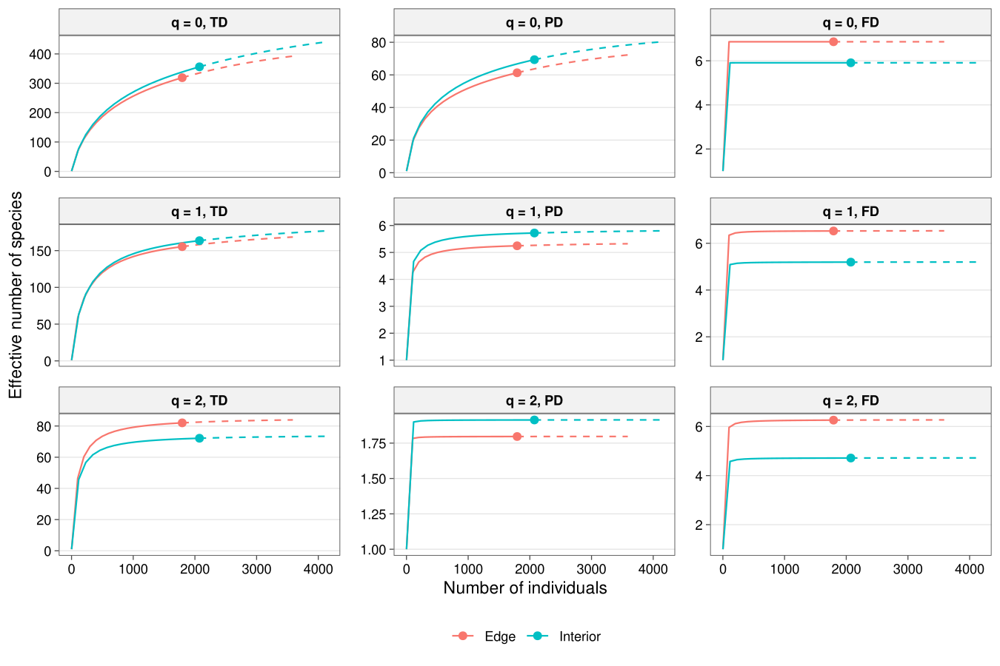
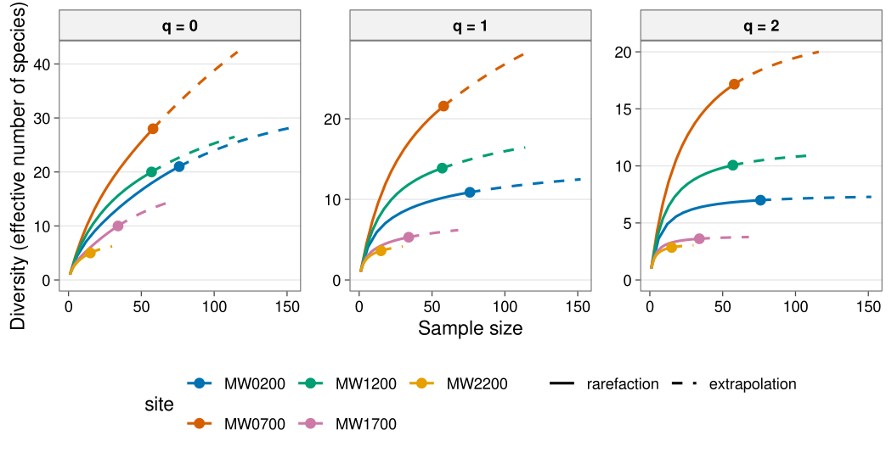
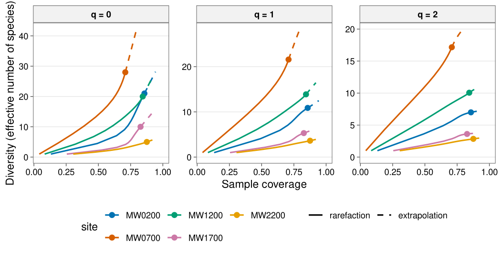
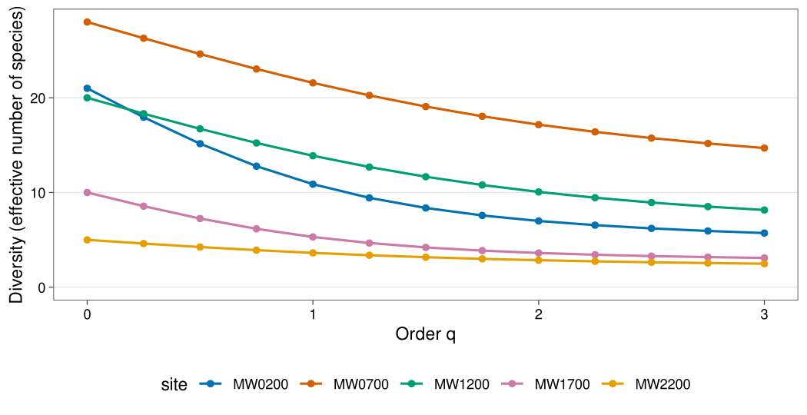
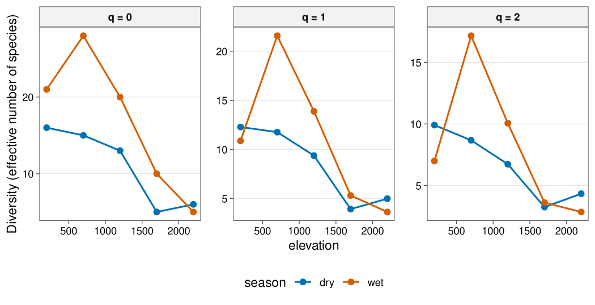
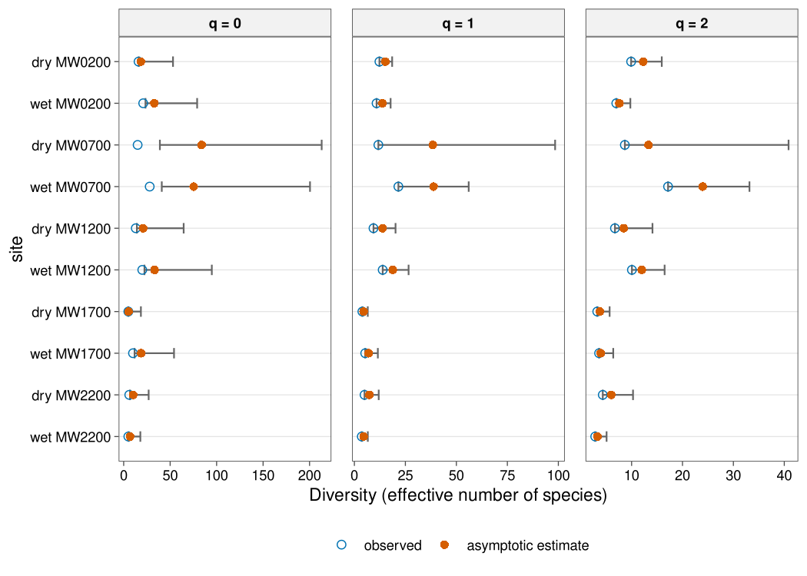
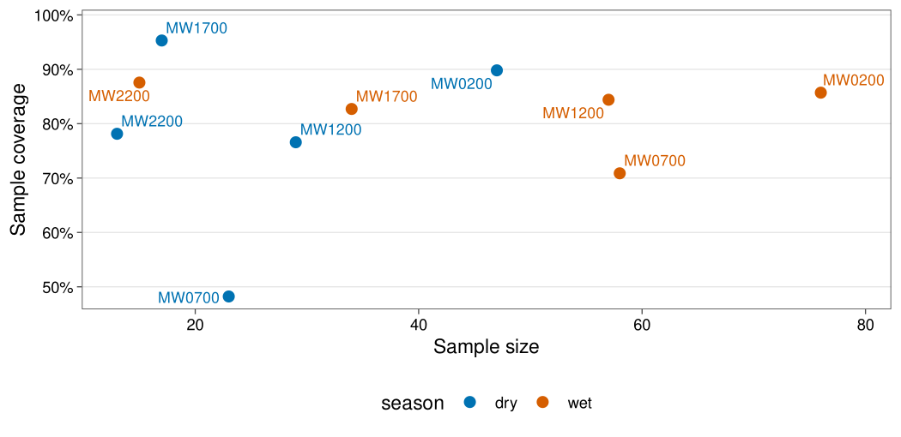
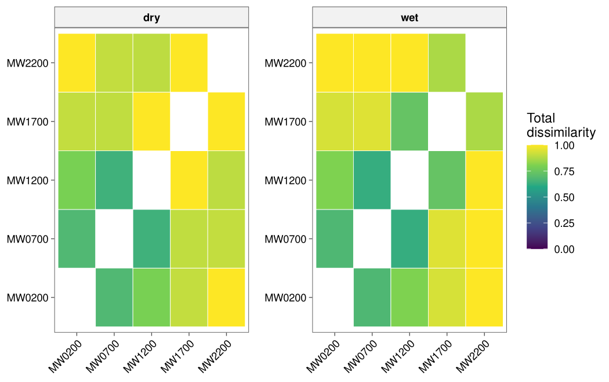
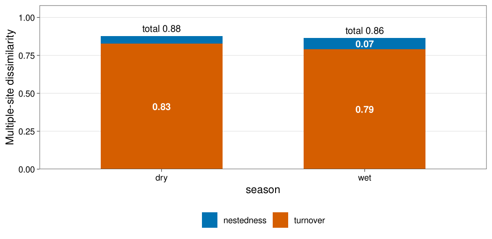

Taxonomic, phylogenetic and functional diversity on one scale, in one tidy workflow.
Reviewers increasingly expect taxonomic (TD), phylogenetic (PD) and functional (FD) diversity to be reported together and to be comparable. tidydiversity expresses all three as Hill numbers of the same order q, in units of effective numbers of species, and standardises them by sample size or sample coverage. Data go in as a long data frame and results come back as tibbles.
In memory of Filip Damen (about 1966-2026). tidydiversity is dedicated to the Wanang leader who refused the loggers, kept his forest for science, and built a research station, a school and a health post with his community. The
wanang_butterfliesdata come from the forest he protected. Read his story.
Taxonomic (TD)
Species counts only. Observed and asymptotic Hill numbers, sample coverage, rarefaction and extrapolation, matching iNEXT.
Why tidydiversity?
Community ecology in R is spread over many packages: iNEXT and iNEXT.3D for Hill numbers, vegan for ordination and permutation tests, betapart for beta diversity, FD, TPD, ade4 and phytools for traits and phylogenies. Each has its own input format (wide matrices, lists, row names) and its own output (lists, S4 objects, printed tables). Most of an analysis ends up as glue code: reshaping data frames by hand, matching species names across matrices, pulling numbers out of nested lists, and re-drawing every plot. tidydiversity replaces that glue with one consistent, tested interface.
One workflow instead of hand-rolled glue
| You usually hand-roll | With tidydiversity |
|---|---|
| Pivot long field data to a site x species matrix, align row names with the site table | Long data in, one row per site and species: div_hill(data, site, species, abundance)
|
| Match species names between the community matrix, the trait table and the tree | Matched and checked for you, with a clear error naming the missing species |
| Loop over seasons or treatments and bind the results |
.by = season, or group_by()
|
| Dig estimates out of iNEXT, vegan or FD list objects | Every result is a tibble; tidy() and glance() for models |
| Rebuild CANOCO-style biplots, rarefaction curves and multi-panel figures |
autoplot(), plot_panel(), plot_save() at journal sizes |
| Write permutation tests for CWM, null models, forward selection |
trait_cwm_test() (max test), trait_ses(), ord_select()
|
| Feed diversity into tidymodels with leakage-free resampling |
model_group_folds(), model_case_weights(), step_hill()
|
Gaps it fills
- TD, PD and FD on one scale. Taxonomic, phylogenetic and functional Hill numbers of the same order q, in effective numbers of species, standardised by sample size or coverage (Chao et al. 2014, 2019).
-
Beta diversity at equal coverage. Gamma, alpha and beta Hill numbers and four normalised dissimilarities for TD, PD and FD, standardised to a common sample coverage with bootstrap intervals (
beta_hill(), Chao et al. 2023), so regions sampled with unequal effort can be compared. - Current, accepted methods. The max test for community-weighted means (Zeleny 2018), forward selection with double stopping (Blanchet et al. 2008), adjusted R² variation partitioning, trait probability densities (Carmona et al. 2019), gawdis trait distances (de Bello et al. 2021), Rao partitioning in equivalent numbers, and the full trait workflow of the Handbook of Trait-Based Ecology.
-
Statistics that respect the design. Restricted permutations within blocks, a Welch-type PERMANOVA that stays valid when groups differ in spread (
beta_welch(), Hamidi et al. 2019), site-blocked cross-validation, and precision weights from estimation error. - Publication output. CANOCO-style biplots and triplots with ellipses, hulls and spiders; consistent colour-blind-safe themes on white backgrounds; multi-panel figures with panel tags.
-
ForestGEO censuses. Tidy stem tables, basal area, size classes, census demography (mortality, recruitment, growth) and stems as a community table, ready for every
div_andbeta_verb. - Maps live in tidymapr. Study-site maps, basemaps, rasters, bioclim layers, spatial statistics and species distribution models are in the companion package tidymapr, which takes the same tidy tables and returns the same tibbles and ggplots.
Fast where it matters
Hot loops are rewritten as compiled C++ (Rcpp) kernels or as vectorised matrix algebra. Every rewrite is tested against the reference package and gives identical results. Timings on one CPU core, with the Brazil rainforest data of iNEXT.3D (3868 individuals, 425 species, 40 sample sizes) and the DaPhnE tree (1641 species):
| Task | Before | tidydiversity | How |
|---|---|---|---|
| PD rarefaction and extrapolation | 3.9 s | 0.4 s | C++ hypergeometric kernel |
| FD rarefaction and extrapolation | 3.6 s (iNEXT.3D) | 0.2 s | C++ kernel |
| Blomberg’s K with 999 randomisations | 4.4 s per K (phytools) | 1.5 s in total | contrasts with precomputed tree terms |
| Community TPDs and TPD indices | 2.5 s (TPD) | < 0.1 s | matrix algebra |
Optional packages (vegan, FD, ade4, TPD, phytools, tidymodels) load only when a function needs them, so library(tidydiversity) stays light.
Made for the tidyverse
- Tidy in, tidy out. One row per site and species goes in, a tibble comes out, ready for dplyr, tidyr and ggplot2.
-
Data-masking. Name your columns with
site,speciesandabundance, as you would in dplyr. -
Grouping. Every verb takes
.byand respectsgroup_by(). -
broom and tidymodels.
tidy()andglance()methods, a recipes step, and rsample folds. -
ggplot2.
autoplot()returns ordinary ggplot objects you can extend with+; patchwork composes them. -
Predictable names. Functions are grouped by prefix:
div_(alpha diversity),beta_,ord_,trait_,phylo_,model_,stems_andplot_. - Checked. Results match iNEXT, iNEXT.3D, betapart, vegan, FD, ade4, iNEXT.beta3D, indicspecies, TPD and phytools in more than 400 tests.
What one package covers
| Topic | tidydiversity | Usually needs |
|---|---|---|
| Hill numbers, coverage, rarefaction/extrapolation (TD, PD, FD) | div_*() |
iNEXT, iNEXT.3D, hillR |
| Beta diversity partitioning, distance decay and decay models |
beta_pair(), beta_multi(), beta_decay(), beta_decay_model()
|
betapart |
| Pairwise Hill-number dissimilarity (Sorensen, Jaccard, Horn, Morisita-Horn) | beta_hill_pair() |
vegan |
| Coverage-standardised beta diversity (TD, PD, FD) | beta_hill() |
iNEXT.beta3D |
| Ordination (PCA to db-RDA) with biplots |
ord_fit(), autoplot()
|
vegan, ggvegan, ggord |
| PERMANOVA (classic and Welch-type), dispersion, variation partitioning, forward selection |
beta_permanova(), beta_welch(), beta_dispersion(), ord_varpart(), ord_select()
|
vegan, adespatial |
| Indicator species, corrected for multiple testing | beta_indicator() |
indicspecies |
| Traits: CWM, FD indices, null models, ITV, fourth corner | trait_*() |
FD, gawdis, picante, cati, ade4, weimea |
| Trait probability densities | trait_tpd() |
TPD |
| Phylogenetic signal and distances | phylo_*() |
phytools, picante, ape |
| Modelling with tidymodels |
model_*(), step_hill()
|
hand-written glue |
| ForestGEO census tables and demography | stems_*() |
fgeo, CTFS R package |
| Partial-effect and surface plots; overdispersed counts |
plot_partial(), plot_surface(), model_count()
|
visreg, plotmo, aods3 |
| Publication figures and tables |
autoplot(), plot_*(), div_table()
|
ggplot2, patchwork, gt |
Installation
Install the development version from GitHub:
# install.packages("pak")
pak::pak("jmozez/tidydiversity")The source code lives on GitHub, https://github.com/jmozez/tidydiversity, with a mirror on GitLab, https://gitlab.com/jimmy.moses/tidydiversity.
User guide
New to tidydiversity or to diversity analysis? The User guide explains, chapter by chapter, how to install and run tidydiversity in RStudio and what every analysis means: the concept and theory, runnable code on real field data, figures and tables, how to interpret them and how to report them.
Maps with tidymapr
tidydiversity does no geospatial work. Its companion package tidymapr draws study-site and diversity maps, reads and writes vector and raster files, downloads climate, elevation and boundary layers, computes spatial statistics and fits species distribution models. It takes the tidy tables tidydiversity uses and returns tibbles and ggplots, so the two packages share one workflow, the way dplyr and ggplot2 do:
pak::pak("jmozez/tidymapr")
library(tidydiversity)
library(tidymapr)
div_estimate(png_ants, q = 0, .by = season) |>
dplyr::filter(season == "dry") |>
dplyr::left_join(geo_example_sites(), by = "site") |>
plot_geo(estimate, lon, lat, label = site)Example
png_ants records ground-foraging ants at nutrient baits along the Mt Wilhelm elevational gradient in Papua New Guinea, in the dry and the wet season (Moses et al. 2023). Each row is one species at one bait, so diversity is estimated from the number of baits at which each species was found.
library(tidydiversity)
library(dplyr)
div_hill(png_ants, q = c(0, 1, 2), .by = season)
#> # A tibble: 30 x 5
#> season site q n diversity
#> <chr> <chr> <dbl> <dbl> <dbl>
#> 1 dry MW0200 0 47 16
#> 2 dry MW0200 1 47 12.3
#> 3 dry MW0200 2 47 9.91
#> 4 wet MW0200 0 76 21
#> 5 wet MW0200 1 76 10.9
#> 6 wet MW0200 2 76 6.99
#> 7 dry MW0700 0 23 15
#> 8 dry MW0700 1 23 11.8
#> 9 dry MW0700 2 23 8.67
#> 10 wet MW0700 0 58 28
#> # i 20 more rowsCompare sites at equal sample completeness. By default each season is standardised to the lowest coverage that all its sites reach at twice their sample size, so no site is extrapolated too far:
set.seed(1)
div_standardise(png_ants, .by = season, nboot = 50) |>
filter(q == 0)
#> # A tibble: 10 x 10
#> season site q m method coverage diversity se lower upper
#> <chr> <chr> <dbl> <dbl> <chr> <dbl> <dbl> <dbl> <dbl> <dbl>
#> 1 dry MW0200 0 11.6 rarefaction 0.565 7.96 0.458 7.07 8.86
#> 2 wet MW0200 0 45.1 rarefaction 0.796 15.7 1.42 12.9 18.4
#> 3 dry MW0700 0 46.0 extrapolation 0.565 26.0 5.31 15.6 36.4
#> 4 wet MW0700 0 116 extrapolation 0.796 42.2 6.36 29.8 54.7
#> 5 dry MW1200 0 11.0 rarefaction 0.565 7.17 0.669 5.86 8.48
#> 6 wet MW1200 0 40.6 rarefaction 0.796 17.1 1.82 13.5 20.6
#> 7 dry MW1700 0 3.07 rarefaction 0.565 2.32 0.226 1.88 2.77
#> 8 wet MW1700 0 25.4 rarefaction 0.796 8.36 1.58 5.26 11.5
#> 9 dry MW2200 0 4.76 rarefaction 0.565 3.48 0.363 2.77 4.20
#> 10 wet MW2200 0 8.97 rarefaction 0.796 4.01 0.585 2.86 5.15Example data from Papua New Guinea
Every example uses published field data, rebuilt from the original deposits by scripts in data-raw/.
| Dataset | What it holds | Source |
|---|---|---|
png_ants |
Ants at nutrient baits, Mt Wilhelm, 200-3700 m, dry and wet season | Moses et al. (2023) Global Ecology and Biogeography, doi:10.1111/geb.13757 |
png_tree_ants |
Every ant nest in 1254 trees at 200, 900 and 1800 m | Plowman et al. (2020) Ecography, doi:10.1111/ecog.04730 |
png_frogs |
3390 frogs of 55 species at eight elevations, Mt Wilhelm | Dahl et al. (2024) Biotropica, doi:10.1111/btp.13283 |
wanang_butterflies |
Butterflies on 36 days over three years, Wanang forest plot | Luk et al. (2019) Biotropica, doi:10.1111/btp.12671 |
wanang_caterpillars |
9363 reared caterpillars of 849 morphospecies, primary and secondary forest at Wanang | Butterill and Redmond (2023) GBIF, doi:10.15468/7e96ht (CC BY 4.0) |
TD, PD and FD on one scale
The same verbs give all three dimensions. Here are rarefaction and extrapolation curves for two Brazilian rainforest tree assemblages, using the abundance data, phylogeny and functional distances shipped with iNEXT.3D.
library(ggplot2)
data(list = c(
"Brazil_rainforest_abun_data", "Brazil_rainforest_phylo_tree",
"Brazil_rainforest_distance_matrix"
), package = "iNEXT.3D")
wide <- Brazil_rainforest_abun_data
brazil <- tibble(
site = rep(colnames(wide), each = nrow(wide)),
species = rep(rownames(wide), ncol(wide)),
n = unlist(wide, use.names = FALSE)
) |>
filter(n > 0)
curves <- bind_rows(
div_rarefy(brazil, abundance = n, type = "TD") |> mutate(type = "TD"),
div_rarefy(brazil,
abundance = n, type = "PD",
tree = Brazil_rainforest_phylo_tree
),
div_rarefy(brazil,
abundance = n, type = "FD",
distance = as.matrix(Brazil_rainforest_distance_matrix)
)
)
curves$type <- factor(curves$type, levels = c("TD", "PD", "FD"))
ggplot(curves, aes(m, diversity, colour = site)) +
geom_line(aes(linetype = method == "extrapolation")) +
geom_point(data = filter(curves, method == "observed"), size = 2) +
facet_wrap(vars(q, type),
ncol = 3, scales = "free_y",
labeller = labeller(q = function(x) paste("q =", x), .multi_line = FALSE)
) +
scale_linetype_manual(values = c("solid", "dashed"), guide = "none") +
labs(
x = "Number of individuals",
y = "Effective number of species", colour = NULL
) +
theme_tidydiversity()
Why one scale?
Hill numbers of order q share one unit, the effective number of equally abundant (and, for PD and FD, equally distinct) species, so TD, PD and FD of the same order can be compared directly, and their ratios read as measures of phylogenetic or functional redundancy (Chao, Chiu and Jost 2014, doi:10.1146/annurev-ecolsys-120213-091540; Chao et al. 2019, doi:10.1002/ecm.1343). Standardising every dimension by the same sample size or coverage removes the effect of unequal sampling effort before you compare sites.
Functions
Gallery
Every plot that autoplot() draws, using png_ants.
Rarefaction and extrapolation by sample size
Solid lines are rarefied, dashed lines extrapolated to twice the sample size; points are the observed samples (wet season).

Rarefaction and extrapolation by sample coverage
The same curves plotted against estimated sample coverage, the basis for coverage-standardised comparison.

Hill diversity profile
Observed Hill numbers across orders q from 0 (richness) to 3 (dominant species), one line per site.

Alpha diversity along elevation
Observed q = 0, 1 and 2 diversity at each elevation, one line per season.

Observed and asymptotic diversity
Open circles are observed values, filled circles the asymptotic estimates, with 95% bootstrap intervals.

Sample coverage
Estimated sample coverage of each site against its number of bait occurrences.

Pairwise beta diversity heatmap
Total Sorensen dissimilarity between every pair of sites within each season.

Multi-site beta partition
Multi-site Sorensen dissimilarity of each season split into turnover and nestedness.

Output tables
Example output of every main function on png_ants. Long tables show their first rows.
div_hill()
Observed Hill numbers: n occurrences, diversity of order q per site.
| season | site | q | n | diversity |
|---|---|---|---|---|
| dry | MW0200 | 0 | 47 | 16.000 |
| dry | MW0200 | 1 | 47 | 12.278 |
| dry | MW0200 | 2 | 47 | 9.906 |
| wet | MW0200 | 0 | 76 | 21.000 |
| wet | MW0200 | 1 | 76 | 10.876 |
| wet | MW0200 | 2 | 76 | 6.993 |
| dry | MW0700 | 0 | 23 | 15.000 |
| dry | MW0700 | 1 | 23 | 11.758 |
div_estimate()
Asymptotic estimates: observed and estimate Hill numbers with bootstrap se, lower and upper 95% limits.
| season | site | q | observed | estimate | se | lower | upper |
|---|---|---|---|---|---|---|---|
| dry | MW0200 | 0 | 16.000 | 18.447 | 5.913 | 16.162 | 53.059 |
| dry | MW0200 | 1 | 12.278 | 15.183 | 1.700 | 12.278 | 18.515 |
| dry | MW0200 | 2 | 9.906 | 12.284 | 1.859 | 9.906 | 15.928 |
| wet | MW0200 | 0 | 21.000 | 32.941 | 11.434 | 23.457 | 79.036 |
| wet | MW0200 | 1 | 10.876 | 13.793 | 2.024 | 10.876 | 17.761 |
| wet | MW0200 | 2 | 6.993 | 7.600 | 1.099 | 6.993 | 9.754 |
| dry | MW0700 | 0 | 15.000 | 83.870 | 39.982 | 38.949 | 213.049 |
| dry | MW0700 | 1 | 11.758 | 38.453 | 30.595 | 11.758 | 98.417 |
div_coverage()
Sample coverage: n occurrences, s_obs observed species, f1 singletons, f2 doubletons and estimated coverage.
| season | site | n | s_obs | f1 | f2 | coverage |
|---|---|---|---|---|---|---|
| dry | MW0200 | 47 | 16 | 5 | 5 | 0.898 |
| wet | MW0200 | 76 | 21 | 11 | 5 | 0.857 |
| dry | MW0700 | 23 | 15 | 12 | 1 | 0.482 |
| wet | MW0700 | 58 | 28 | 17 | 3 | 0.709 |
| dry | MW1200 | 29 | 13 | 7 | 3 | 0.766 |
| wet | MW1200 | 57 | 20 | 9 | 3 | 0.844 |
| dry | MW1700 | 17 | 5 | 1 | 2 | 0.953 |
| wet | MW1700 | 34 | 10 | 6 | 2 | 0.827 |
div_rarefy()
Rarefaction and extrapolation: diversity of order q at sample size m, whether method is rarefaction, observed or extrapolation, the expected coverage, and lower and upper limits (NA when nboot = 0).
| site | q | m | method | diversity | coverage | lower | upper |
|---|---|---|---|---|---|---|---|
| MW0200 | 0 | 1 | rarefaction | 1.000 | 0.132 | NA | NA |
| MW0200 | 0 | 38 | rarefaction | 14.140 | 0.780 | NA | NA |
| MW0200 | 0 | 75 | rarefaction | 20.855 | 0.855 | NA | NA |
| MW0200 | 0 | 76 | observed | 21.000 | 0.857 | NA | NA |
| MW0200 | 0 | 77 | extrapolation | 21.143 | 0.859 | NA | NA |
| MW0200 | 0 | 102 | extrapolation | 24.211 | 0.895 | NA | NA |
| MW0200 | 0 | 127 | extrapolation | 26.482 | 0.923 | NA | NA |
| MW0200 | 0 | 152 | extrapolation | 28.162 | 0.943 | NA | NA |
div_standardise()
Coverage standardisation: diversity of order q at a common coverage for every site, with the matching sample size m, the method used, and bootstrap se, lower and upper limits.
| season | site | q | m | method | coverage | diversity | se | lower | upper |
|---|---|---|---|---|---|---|---|---|---|
| dry | MW0200 | 0 | 11.646 | rarefaction | 0.565 | 7.963 | 0.458 | 7.067 | 8.860 |
| dry | MW0200 | 1 | 11.646 | rarefaction | 0.565 | 7.099 | 0.513 | 6.093 | 8.105 |
| dry | MW0200 | 2 | 11.646 | rarefaction | 0.565 | 6.236 | 0.534 | 5.189 | 7.283 |
| wet | MW0200 | 0 | 45.094 | rarefaction | 0.796 | 15.651 | 1.415 | 12.877 | 18.425 |
| wet | MW0200 | 1 | 45.094 | rarefaction | 0.796 | 9.570 | 1.071 | 7.471 | 11.668 |
| wet | MW0200 | 2 | 45.094 | rarefaction | 0.796 | 6.630 | 0.816 | 5.031 | 8.228 |
| dry | MW0700 | 0 | 46.000 | extrapolation | 0.565 | 25.975 | 5.306 | 15.575 | 36.374 |
| dry | MW0700 | 1 | 46.000 | extrapolation | 0.565 | 17.858 | 6.141 | 5.821 | 29.895 |
beta_pair()
Pairwise beta diversity: Sorensen turnover (Simpson) and nestedness components, which sum to total dissimilarity.
| season | site_1 | site_2 | turnover | nestedness | total |
|---|---|---|---|---|---|
| dry | MW0200 | MW0700 | 0.667 | 0.011 | 0.677 |
| dry | MW0200 | MW1200 | 0.769 | 0.024 | 0.793 |
| dry | MW0200 | MW1700 | 0.800 | 0.105 | 0.905 |
| dry | MW0200 | MW2200 | 1.000 | 0.000 | 1.000 |
| dry | MW0700 | MW1200 | 0.615 | 0.027 | 0.643 |
| dry | MW0700 | MW1700 | 0.800 | 0.100 | 0.900 |
| dry | MW0700 | MW2200 | 0.833 | 0.071 | 0.905 |
| dry | MW1200 | MW1700 | 1.000 | 0.000 | 1.000 |
beta_multi()
Multi-site beta diversity: n_sites in each group with the multi-site turnover, nestedness and total.
| season | n_sites | turnover | nestedness | total |
|---|---|---|---|---|
| dry | 5 | 0.827 | 0.051 | 0.877 |
| wet | 5 | 0.790 | 0.074 | 0.864 |
beta_decay()
Distance decay: the pairwise components plus each site’s gradient_1 and gradient_2 values and their distance.
| season | site_1 | site_2 | turnover | nestedness | total | gradient_1 | gradient_2 | distance |
|---|---|---|---|---|---|---|---|---|
| dry | MW0200 | MW0700 | 0.667 | 0.011 | 0.677 | 200 | 700 | 500 |
| dry | MW0200 | MW1200 | 0.769 | 0.024 | 0.793 | 200 | 1200 | 1000 |
| dry | MW0200 | MW1700 | 0.800 | 0.105 | 0.905 | 200 | 1700 | 1500 |
| dry | MW0200 | MW2200 | 1.000 | 0.000 | 1.000 | 200 | 2200 | 2000 |
| dry | MW0700 | MW1200 | 0.615 | 0.027 | 0.643 | 700 | 1200 | 500 |
| dry | MW0700 | MW1700 | 0.800 | 0.100 | 0.900 | 700 | 1700 | 1000 |
| dry | MW0700 | MW2200 | 0.833 | 0.071 | 0.905 | 700 | 2200 | 1500 |
| dry | MW1200 | MW1700 | 1.000 | 0.000 | 1.000 | 1200 | 1700 | 500 |
beta_decay_model()
Distance-decay model of similarity: the fitted a and rate b, the half_distance over which similarity halves, the pseudo_r2, aic and a site-permutation p.value.
| season | model | component | n_pairs | a | b | half_distance | pseudo_r2 | aic | p.value |
|---|---|---|---|---|---|---|---|---|---|
| dry | exponential | total | 10 | 0.257 | 0.001 | 924.159 | 0.143 | -9.214 | 0.349 |
| wet | exponential | total | 10 | 0.897 | 0.002 | 293.331 | 0.694 | -17.577 | 0.017 |
beta_hill_pair()
Pairwise Hill-number beta diversity of order q with the four normalised dissimilarities (first rows shown).
| season | site_1 | site_2 | q | gamma | alpha | beta | dis_sorensen | dis_jaccard | dis_turnover_sorensen | dis_turnover_jaccard |
|---|---|---|---|---|---|---|---|---|---|---|
| dry | MW0200 | MW0700 | 0 | 26 | 15.5 | 1.677 | 0.677 | 0.808 | 0.677 | 0.808 |
| dry | MW0200 | MW1200 | 0 | 26 | 14.5 | 1.793 | 0.793 | 0.885 | 0.793 | 0.885 |
| dry | MW0200 | MW1700 | 0 | 20 | 10.5 | 1.905 | 0.905 | 0.950 | 0.905 | 0.950 |
| dry | MW0200 | MW2200 | 0 | 22 | 11.0 | 2.000 | 1.000 | 1.000 | 1.000 | 1.000 |
| dry | MW0700 | MW1200 | 0 | 23 | 14.0 | 1.643 | 0.643 | 0.783 | 0.643 | 0.783 |
| dry | MW0700 | MW1700 | 0 | 19 | 10.0 | 1.900 | 0.900 | 0.947 | 0.900 | 0.947 |
beta_hill()
Coverage-standardised beta diversity: gamma, alpha and beta of order q at a common coverage, the sample sizes used (m_gamma, m_alpha) and four normalised dissimilarities.
| season | q | coverage | m_gamma | m_alpha | gamma | alpha | beta | n_sites | dis_sorensen | dis_jaccard | dis_turnover_sorensen | dis_turnover_jaccard |
|---|---|---|---|---|---|---|---|---|---|---|---|---|
| dry | 0 | 0.9 | 150.161 | 244.117 | 44.361 | 14.476 | 3.064 | 5 | 0.516 | 0.842 | 0.516 | 0.842 |
| dry | 1 | 0.9 | 150.161 | 244.117 | 30.995 | 9.929 | 3.122 | 5 | 0.707 | 0.707 | 0.530 | 0.850 |
| dry | 2 | 0.9 | 150.161 | 244.117 | 23.324 | 6.968 | 3.347 | 5 | 0.877 | 0.587 | 0.587 | 0.877 |
| wet | 0 | 0.9 | 259.764 | 480.767 | 64.058 | 23.502 | 2.726 | 5 | 0.431 | 0.791 | 0.431 | 0.791 |
| wet | 1 | 0.9 | 259.764 | 480.767 | 35.366 | 12.345 | 2.865 | 5 | 0.654 | 0.654 | 0.466 | 0.814 |
| wet | 2 | 0.9 | 259.764 | 480.767 | 21.377 | 7.081 | 3.019 | 5 | 0.836 | 0.505 | 0.505 | 0.836 |
References
- Chao, A. et al. (2014). Rarefaction and extrapolation with Hill numbers. Ecological Monographs, 84, 45-67.
- Chao, A. and Jost, L. (2012). Coverage-based rarefaction and extrapolation. Ecology, 93, 2533-2547.
- Baselga, A. (2010). Partitioning the turnover and nestedness components of beta diversity. Global Ecology and Biogeography, 19, 134-143.
- Blanchet, F. G., Legendre, P. and Borcard, D. (2008). Forward selection of explanatory variables. Ecology, 89, 2623-2632.
- Carmona, C. P. et al. (2019). Trait probability density (TPD): measuring functional diversity across scales based on TPD with R. Ecology, 100, e02876.
- Chao, A., Chiu, C.-H. and Jost, L. (2014). Unifying species diversity, phylogenetic diversity, functional diversity, and related similarity and differentiation measures through Hill numbers. Annual Review of Ecology, Evolution, and Systematics, 45, 297-324.
- Chao, A. et al. (2019). An attribute-diversity approach to functional diversity, functional beta diversity, and related (dis)similarity measures. Ecological Monographs, 89, e01343.
- Chao, A. et al. (2023). Rarefaction and extrapolation with beta diversity under a framework of Hill numbers: the iNEXT.beta3D standardization. Ecological Monographs, 93, e1588.
- de Bello, F. et al. (2021). Handbook of Trait-Based Ecology: From Theory to R Tools. Cambridge University Press.
- Hamidi, B. et al. (2019). Wd-test: robust distance-based multivariate analysis of variance. Microbiome*, 7, 51.
- Gómez-Rodríguez, C. and Baselga, A. (2018). Variation among European beetle taxa in patterns of distance decay of similarity suggests a major role of dispersal processes. Ecography, 41, 1825-1834.
- Moses, J. et al. (2023). Nutrient use by tropical ant communities varies among three extensive elevational gradients: a cross-continental comparison. Global Ecology and Biogeography, 32, 2212-2229.
- Nekola, J. C. and White, P. S. (1999). The distance decay of similarity in biogeography and ecology. Journal of Biogeography, 26, 867-878.
- Zeleny, D. (2018). Which results of the standard test for community-weighted mean approach are too optimistic? Journal of Vegetation Science, 29, 953-966.
Citation
If you use tidydiversity in published work, please cite it. In R, citation("tidydiversity") prints the reference:
Moses, J. (2026). tidydiversity: Taxonomic, Phylogenetic and Functional Diversity with Tidy Hill Numbers. R package version 0.1.0. Zenodo. https://doi.org/10.5281/zenodo.24046912
@Manual{tidydiversity,
title = {tidydiversity: Taxonomic, Phylogenetic and Functional Diversity with Tidy Hill Numbers},
author = {Jimmy Moses},
year = {2026},
note = {R package version 0.1.0},
doi = {10.5281/zenodo.24046912},
url = {https://github.com/jmozez/tidydiversity},
}Please also cite the methods you use: each help page and User guide chapter lists the original references.